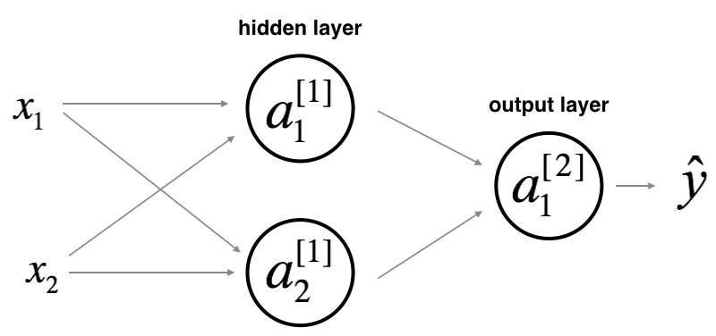
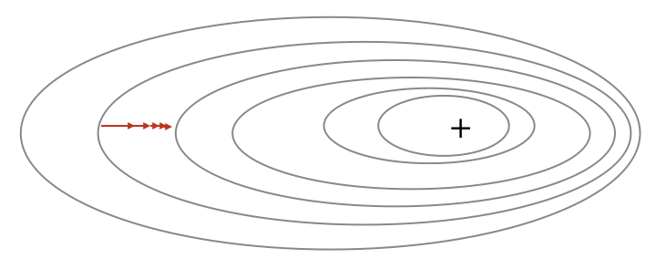

The lack of initialization techniques is one of the major reasons deep neural networks were not training properly in the past decades. Since then, new initializations schemes have been found to accelerate training. In this post, we will explain the methods to initialize the parameters of your neural network.
Table of content
The importance of an appropriate initialization
What are the issues with a bad initialization?
What is an "appropriate" initialization?
Proof of Xavier initialization
I The importance of an appropriate initialization
A neural network model is defined by its architecture and its parameters. For example, in order to build a binary classifier,
you first fix an architecture (a neural network). Then, you learn the parameters using the training process:
Initialize the parameters
Use an optimization algorithm (such as Gradient Descent), repeat:
Forward propagate an input image
Compute the cost function
Backward propagate the error to calculate the gradients
Update the parameters using their gradients
Given a new data point
, you can then use your model (architecture + learned parameters) to predict its class.
It is critical to initialize the parameters with the right method. To illustrate this argument, let’s consider the 3-layer neural network below. Initialize this network with different initialization methods and observe the impact on the learning.
1. Choose input dataset
Select a training dataset.
Select whether to visualize weights or gradients.
2. Choose initialization method
Select an initialization method for the neural network1.
3. Observe the training
Train the network using the following buttons.
What do you notice about the gradients and weights when the initialization method is "zero"?
Initializing all the weights with "zeros" leads the weights to learn the same features during training.
What do you notice about the loss plot when you initialize your weights with "too small" or "too large" values?
Initializing the weights with (I) "too small" or (II) "too large" values leads respectively to (I) slow learning or (II) divergence.
An "appropriate" initialization is required to have efficient training. We will investigate this further in the next section.

Any constant initialization scheme will perform very poorly. Consider the neural network above and assume we initialize all the biases to 0 and the weights with some constant
. If we forward propagate an input
in this network, the input to both hidden units will be
. Which, will lead to identical output activation values and gradients. Thus, throughout training both neurons will perfom identically, effectively collapsing the capacity of our network to learn.
II What are the issues with a bad initialization?
Consider this 9-layer neural network just after it was initialized.
At every iteration of the optimization loop (forward, cost, backward, update), we observe that backpropagated gradients are either amplified or minified as we move from the output layer towards the input layer. This makes sense if you recall the following.
Assume all the activation functions are linear (identity function). Then, the output activation is:
where
and
are all matrices of size
because layers [1] to [L-1] have 2 neurons and receive 2 inputs.
Let's see what would be the outcome of a "too small", "too large" or "appropriate" initialization.
Case 1: "too large" initialization leads to Exploding Gradients.
Consider the case where every weight is initialized slightly larger than the identity matrix.
This simplifies to
, and the values of the activation
increase exponentially with
. When these activations are used in backward propagation, this leads to the exploding gradient problem.
An illustration of the exploding gradient problem on the contour plot of the loss. The gradients are too big leading to oscilation of the loss around its mininum value (marked by "+").
Case 2: "too small" initialization leads to Vanishing Gradients
Similarly, consider the case where every weight is initialized slightly smaller than the identity matrix.
This simplifies to
, and the values of the activation
decreases exponentially with
. When these activations are used in backward propagation, this leads to the vanishing gradient problem.

An illustration of the vanishing gradient problem on the contour plot of the loss. The gradients are too small leading to convergence of the loss before it has reached the mininum value (marked by "+").
All in all, initializing your weights with inappropriate values will lead to divergence or slow-down in the training.
III What is an "appropriate" initialization?
We will stick to this rule of thumb:
The variance should stay the same across every layer to prevent the signal from vanishing or exploding.
More concretely, consider a layer
. Its forward propagation is:
We would like the following to hold:2
Variance is a measure of how much a data source is spread about its mean. In this case our data source is the input or output values at a layer in our network.
The goal is to keep the input variance
equal to the output variance
for every layer
.
Maintaining the value of the variance of the input and the output of every layer guarantees no exploding/vanishing gradient. The recommended initialization is Xavier initialization (or one of its derived methods), for every layer
:
In a sentence, it means that all the weights of layer
are picked randomly from a normal distribution with mean
and variance
. Biases are initialized with zeros.
The visualization below illustrates the impact of the weights’ distribution on each layer’s activations’ distribution for a 5-layer full-connected neural network (presented below).
The normal (or Gaussian) distribution is a very common parametric probability distribution. Above is a plot of its PDF. Taller regions in this plot indicate a higher probability of a random sample from this region.
Among the below distributions, select the one to use to initialize your parameters. 3.
3. Train the network and observe
The grid below refers to the input images, Blue squares represent correctly classified images. Red squares represent misclassified images.
Output Predictions
The next section will teach you the proof of Xavier initialization and you will understand more precisely why it is an appropriate initialization to use.
In this section, we will prove Xavier Initialization. I belive it sometimes help to understand the proof to grasp the concept, but you can get most of the intuition without the math.
Let’s work on the layer
described in part (III) and assume the activation function is
. The forward propagation is:
The goal is to derive a relationship between
and
. We will then understand how we should initialize our weights such that:
.
Each of these two equations is a source of information. Let's start with (1).
Assume we initialized our network with appropriate values. Early in the training, we are in the linear regime of
. Values are small enough and thus
5, meaning that
.
Moreover,
where
. For simplicity, let’s assume that
(it will end up being true given the choice of initialization we will choose). Thus, looking element-wise at the previous equation
now gives:
, or hyperbolic tangent, is a non-linear function defined as:
Important properties are its parity (
=
) and its linearity around 0 (
= 1).
Because all elements of our vector are independently and identically distributed, the variance of the vector is the same as the variance of any of its elements.
A common “math trick” at this point is to extract the summation outside the variance. To do this we must make the following three assumptions6:
Weights are independent and identically distributed
Inputs are independent and identically distributed
Weights and inputs are mutually independent
Thus, now we have:
Another common “math trick” is to convert the variance of a product into product of variances, and we have a formula for it:
Using this formula with
and
, we get:
We’re almost done! The first assumption leads to
and the second assumption leads to
because weights are initialized with zero mean, and inputs are normalized. Thus,
The equality above results from A1 stating that for any entry
of
:
Similarly the second assumption leads to:
With the same idea:
Wrapping up everything, we have:
These assumptions are generally wrong but we use them for the theory and then validate them practically...
Explain why this proof can be used by induction to show that an appropriate initialization is mandatory...